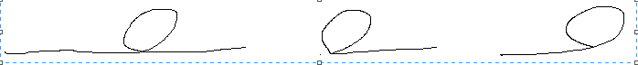

This is not the first time i see this algo problem, and i want to describe the details of how to solve it this time in case need to revisit it later.
首先想象一下一个list带loop/circle的形状.

最左边的最general, 但是一个node只有一个next指针, 只能指向一个后续node, 所以只有最后的情况才可能. 或者是这个list没有loop, 或者是这个list本身就是一个loop/closed circle.
假如一个node的定义是:
struct Node {
struct Node *next;
};
要形成一个loop, 某一个node的next指向已经visit过的node. 那要记录被visit过的node, 可以把visit的node放入一个set里面, 然后检查每一个node的next指向的node是否已经在set里面了, 是的话就有loop.
bool hasLoop(Node *head)
{
set.clean(); // empty.
while (head)
{
if (set.contains(head))
return true;
set.add(head);
head = head->next;
}
return false;
}
直观, 遍历一遍list就ok了, O(n) time, 空间倒是需要O(n).
在网上找到的解法中, 最流行就是两个指针, slow and fast:
bool hasLoop(Node *head) {
Node *slow = head, *fast = head;
while (slow && fast && fast->next) {
slow = slow->next;
fast = fast->next->next;
if (slow == fast)
return true;
}
return false;
}
原来这种策略有专门的名字"Tortoise and hare"龟兔赛跑... 用于更general的cycle detection问题.
这个算法容易记, 容易实现, 但是怎么证明一旦有loop, slow and fast这两个指针一定会在loop中相遇呢? 我比较关心这个, 一开始想不通, 后来看到用归纳法可以证明: 假如s and f这两个指针都在loop里面了,
case 1, f在s后1个位置, 也就是f->next == s, 这种情况下, 下一轮 s and f就相遇meet.
case 2, f在s后2位, 下一轮之后, f变成在s后1位了, 也就是case 1的情况, 所以再下一轮, 就会meet. 一共2轮.
case 3, f在s后3位, 下一轮之后, f变成在s后2位了, 也就是case 2的情况, 也能在2轮之后就meet. 一共3轮.
对于一个有n个node的loop, f最多也只能在s后n-1位, 每走1轮, 就缩小1位, 走一共n-1轮, 两者meet.
性质: f在s后x位, 走x轮, 相遇.
假如上面的理解是对的, 那这个性质就很有意思了.
PS: 这文档描述了linked list下的一般操作, http://cslibrary.stanford.edu/105/LinkedListProblems.pdf